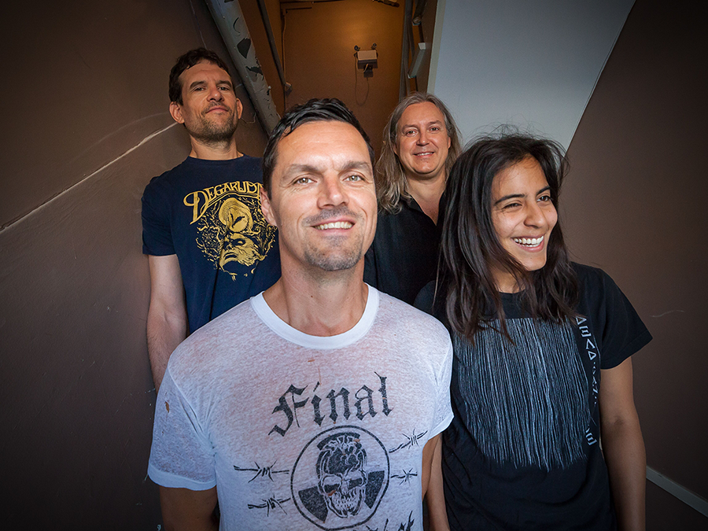

Propagandhi
Years Active: 1986–present
Genre/s: Melodic hardcore, heavy metal, skate punk
Label/s: G7 Welcoming Committee, Fat Wreck Chords, Smallman, Grand Hotel van Cleef, Recess, Epitaph
Members: Jord Samolesky, Chris Hannah, Todd Kowalski, Sulynn Hago
Propagandhi is a Canadian punk rock and metal band formed in Portage la Prairie, Manitoba, in 1986 by guitarist Chris Hannah and drummer Jord Samolesky. The band is currently located in Winnipeg, Manitoba, and completed by bassist Todd Kowalski and guitarist Sulynn Hago.
In 1986, Samolesky and Hannah recruited original bassist Scott Hopper via a "progressive thrash band looking for bass player" flyer posted in a local record shop. Hopper was replaced three years later by Mike Braumeister, which completed the first lineup to perform live. After the band established itself through several demos and larger shows, including one with Fugazi, Braumeister moved to Vancouver, and John K. Samson became the band's third bassist.
In 1992, Propagandhi played a show with California punk rock band NOFX and included in their set a cover version of Cheap Trick's "I Want You to Want Me". Impressed by their performance, NOFX front man Fat Mike signed them to his independent record label Fat Wreck Chords. The band later accompanied him to Los Angeles, where they recorded their debut album, How to Clean Everything, released in 1993. The band spent the next three years touring and issuing several smaller releases, including the How to Clean a Couple o' Things single on Fat Wreck Chords, a split 10-inch record with I Spy, a split 7-inch with F.Y.P, and the double 7-inch Where Quality is Job #1, the latter three on Recess Records.